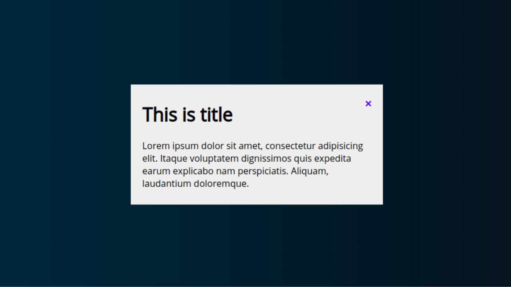

Create Simple Popup Box using HTML & CSS only
Popup boxes / Modal are useful way of showing an important information to the website visitors. In this post we will see how to create an animated popup box with close button using HTML and CSS only. Here we have used special CSS selectors ":target" to create toggle behaviour.